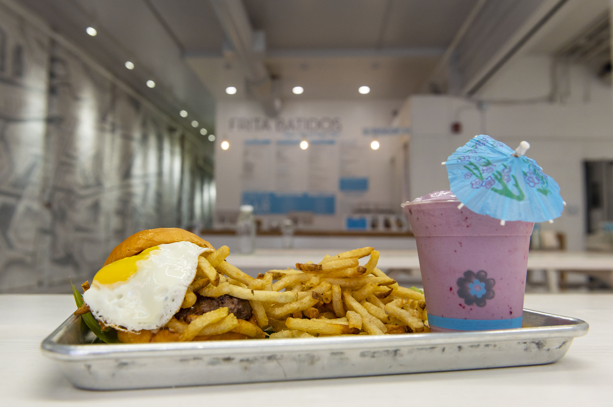

Delly Belly
Enchanting Donuts, located downtown, is a hidden gem for donut lovers. The aroma of freshly baked treats fills the air as you enter. Their colorful and inventive donuts, from classic glazed to unique flavors like maple bacon, are a delight for the taste buds. With a perfect balance of sweetness and fluffy texture, each donut is a heavenly treat. The friendly staff and cozy atmosphere make Enchanting Donuts a must-stop for those seeking a magical donut experience.

Slows Bar BQ
Slows Bar BQ in Detroit is a barbecue haven that has earned its reputation for outstanding smoked meats. From succulent brisket to mouthwatering ribs, the menu is a carnivore's delight. The rustic yet lively atmosphere adds to the overall experience. The extensive beer selection complements the flavorful dishes, making Slows Bar BQ a must-visit for barbecue enthusiasts seeking a casual, delicious meal in the heart of Detroit.
Selden Standard
Selden Standard elevates the dining experience in Detroit with its focus on seasonal, locally-sourced American cuisine. The menu, characterized by creativity and attention to detail, offers dishes that are both visually stunning and delectable. The ambiance strikes a balance between modern and cozy, providing an inviting setting for a memorable dining experience. With its commitment to quality ingredients and culinary innovation, Selden Standard is a standout in Detroit's dining scene.
Zingerman's Delicatessen
Zingerman's Delicatessen in Ann Arbor is a culinary institution known for its exceptional sandwiches and deli offerings. Boasting high-quality ingredients and a diverse menu, Zingerman's captures the essence of a classic deli experience. The atmosphere exudes warmth and nostalgia, making it a favorite spot for locals and visitors alike seeking a satisfying, authentic deli meal in the heart of Ann Arbor.

Frita Batidos
Frita Batidos brings a taste of Cuba to Ann Arbor, impressing diners with its flavorful and inventive menu, particularly its signature burgers. The vibrant and lively atmosphere enhances the dining experience, creating a unique fusion of street food and culinary creativity. With its bold flavors and lively ambiance, Frita Batidos stands out as a must-try spot for those looking for a delicious and unconventional dining experience in Ann Arbor.
Founders Brewing Co
Founders Brewing Co. in Grand Rapids is not just a renowned brewery but also a destination for hearty pub fare. The craft beer selection is extensive, and the pub menu offers a satisfying array of dishes. The atmosphere is cozy, and the friendly staff adds to the overall welcoming vibe. Whether you're a beer enthusiast or a food lover, Founders Brewing Co. provides a well-rounded experience in the heart of Grand Rapids.
The Electric Cheetah
The Electric Cheetah in Grand Rapids stands out for its eclectic menu and imaginative dishes. The restaurant's quirky decor adds a fun element to the dining experience. Diners appreciate the diverse range of options, from comfort food classics to creatively crafted plates. The welcoming ambiance and unique culinary offerings make The Electric Cheetah a standout choice for those seeking a memorable dining adventure in Grand Rapids.
Trattoria Stella
Trattoria Stella in Traverse City is an Italian gem that combines authenticity with a commitment to locally-sourced ingredients. The menu showcases classic Italian flavors prepared with precision and creativity. The intimate setting adds to the charm, creating a cozy atmosphere for a delightful dining experience. With an extensive wine list to complement the exquisite dishes, Trattoria Stella offers a taste of Italy in the heart of Traverse City.
The Cooks' House
The Cooks' House in Traverse City is a culinary gem known for its farm-to-table approach and a menu that evolves with the seasons. Diners can expect inventive dishes crafted from fresh, local produce. The intimate setting and attention to detail create a dining experience that feels both sophisticated and welcoming. The Cooks' House is a must-visit for those seeking a culinary journey through the flavors of Michigan's local bounty.
Food Dance
Food Dance in Kalamazoo stands out for its commitment to local, sustainable, and organic ingredients. The menu features diverse and thoughtfully prepared dishes that highlight the quality of the ingredients. The welcoming atmosphere and dedication to ethical dining practices make Food Dance a standout choice for those seeking a culinary experience that goes beyond the plate in Kalamazoo.